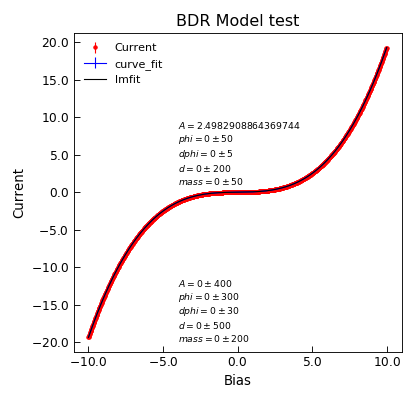

BDR¶
-
class
Stoner.Fit.BDR(*args, **kwargs)[source]¶ Bases:
lmfit.model.ModelBDR model tunnelling.
Parameters: - V (array) – ias voltage
- A (float) – barrier area in m^2
- phi (float) – average barrier height in eV
- dphi (float) – change in barrier height in eV
- d (float) – barrier width in angstrom
- mass (float) – effective electron mass as a fraction of electron rest mass
Returns: Data for tunneling rate according to the BDR model.
Note
See Brinkman et. al. J. Appl. Phys. 41 1915 (1970) or Tuan Comm. in Phys. 16, 1, (2006)
Example
"""Example of nDimArrhenius Fit.""" from Stoner import Data import Stoner.Fit as SF from numpy import linspace,ones_like from numpy.random import normal #Make some data V=linspace(-10,10,1000) I=SF.bdr(V,2.5,3.2,0.3,15.0,1.0)+normal(size=len(V),scale=1.0E-3) dI=ones_like(V)*1.0E-3 #Curve fit d=Data(V,I,dI,setas="xye",column_headers=["Bias","Current","Noise"]) d.curve_fit(SF.bdr,p0=[2.5,3.2,0.3,15.0,1.0],result=True,header="curve_fit") d.setas="xyey" d.plot(fmt=["r.","b-"]) d.annotate_fit(SF.bdr,x=-4,y=1.0,prefix="bdr",fontdict={"size":"x-small"}) #lmfit d.setas="xy" fit=SF.BDR(missing="drop") p0=fit.guess(I,x=V) for p,v,mi,mx in zip(["A","phi","dphi","d","mass"],[2.500,3.2,0.3,15.0,1.0],[0.100,1.0,0.05,5.0,0.5],[10,10.0,2.0,30.0,5.0]): p0[p].value=v p0[p].bounds=[mi,mx] d.lmfit(fit,p0=p0,result=True,header="lmfit") d.setas="x...y" d.plot() d.annotate_fit(fit,x=-4,y=-20.0,prefix="BDR",fontdict={"size":"x-small"}) d.ylabel="Current" d.title="BDR Model test" d.tight_layout()
Methods Summary
guess(data[, V])Just set the A, phi,dphi,d and mass values to typical answers for a small tunnel junction Methods Documentation

{kind=link}
{kind=link}